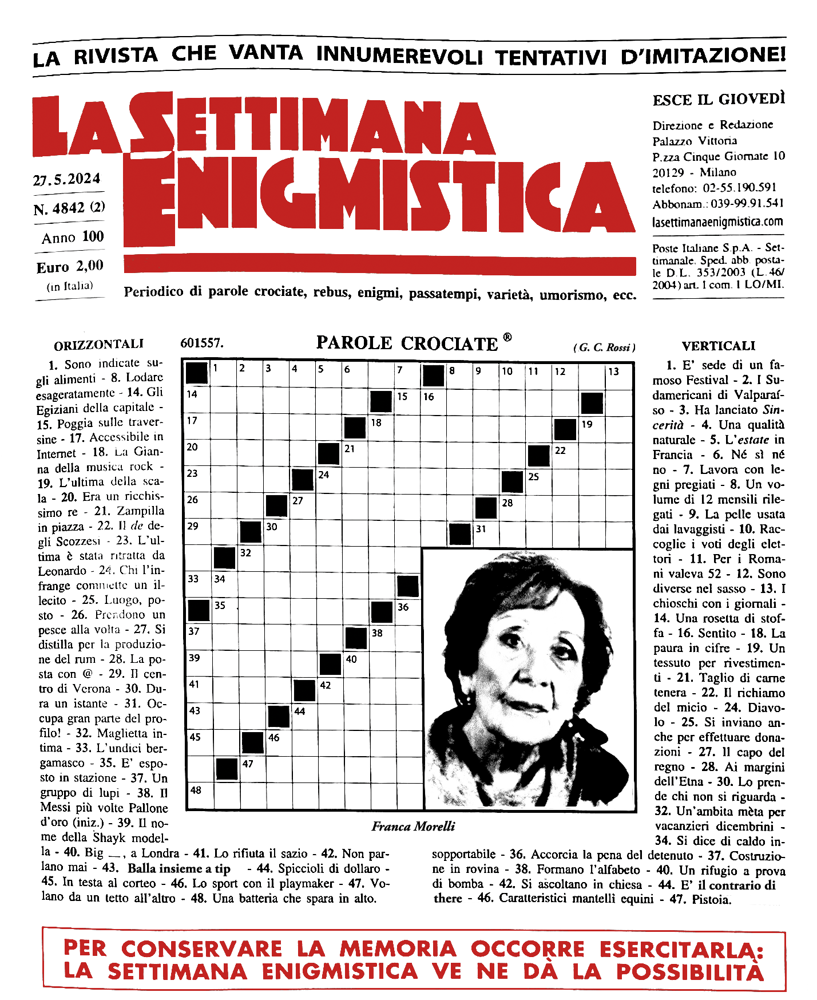

La Settimana Enigmistica is an Italian crossword puzzle magazine. It's been running for 93 years consecutively, publishing every week without fail (except for two issues in 1943 and 1945, delayed by WWII). It’s beloved by many Italians and immediately recognisable, its typography mostly unchanged through the years: a black-and-white photo of a celebrity always on the cover, the main title in blue, green or red. It doesn’t just promise hours of fun, but it’s presented as an aid against memory loss – “to preserve your memory you have to exercise it: La Settimana Enigmistica allows you to do so.”
In my memories, my grandma always had a copy by her side – at the beach while on holiday, on the coffee table in her living room, and on her nightstand when she wasn’t able to leave her bed anymore. Even in her nineties, she would keep up her weekly ritual and attributed her lucid thinking skills in part to La Settimana Enigmistica.
My grandma passed away before I could come out to her – I was waiting until I had someone to introduce her to, but she died the year before I met my now wife. I sometimes think about how that conversation would have gone, what it would have been like to introduce her to my wife, how she would have looked at our wedding. She passed at 95. La Settimana Enigmistica will soon catch up and outrun her.
Before that happens, my wife is on a mission to find a queer celebrity on the cover of one of the issues. She checks every week. So far, she hasn’t had any luck. She’s been trying for the past 2 years. I’m sure that at some point, in its 93 years of history, someone queer has passed through and surely, it will happen again. It’s just a weird form of superstition, but I feel that if we can find someone before the magazine reaches its 95 year, it would mean something. It won’t be like a coming out, but it will be something, a small bridge, a connection, a sign from my grandma to me. We have 2 years left.
